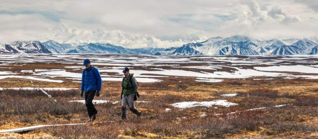

Ecology
Ecology is the study of how organisms interact with one another and with their physical environment. The distribution and abundance of organisms on Earth is shaped by both biotic, living-organism-related, and abiotic, nonliving or physical, factors. Ecology is studied at many levels, including organism, population, community, ecosystem, and biosphere. Read more here.
Labeling study of water use by tundra evergreens in the winter spring transition

The Data
Labeling study of water use by tundra evergreens in the winter spring transition
This dataset is brought to you by Steven F. Oberbauer (he/him), a Professor of Biological Sciences at Florida International University. His area of interests are plant and ecosystem physiology, energy balance, plant phenology and productivity of vascular plants and bryophytes, particularly in response to climate change.
The full paper associated with this dataset is avalible here.
What We Know
The cold season in the Arctic extends over 8 to 9 mo, yet little is known about vascular plant physiology during this period. Evergreen species photosynthesize under the snow, implying that they are exchanging water with the atmosphere. However, liquid water available for plant uptake may be limited at this time.
What we found out
Evergreen tundra plants take up water under snow cover, some via roots, but also likely by foliar uptake. The ability to take up water in the subnivean environment allows evergreen tundra plants to take advantage of mild spring conditions under the snow and replenish carbon lost by winter respiration.